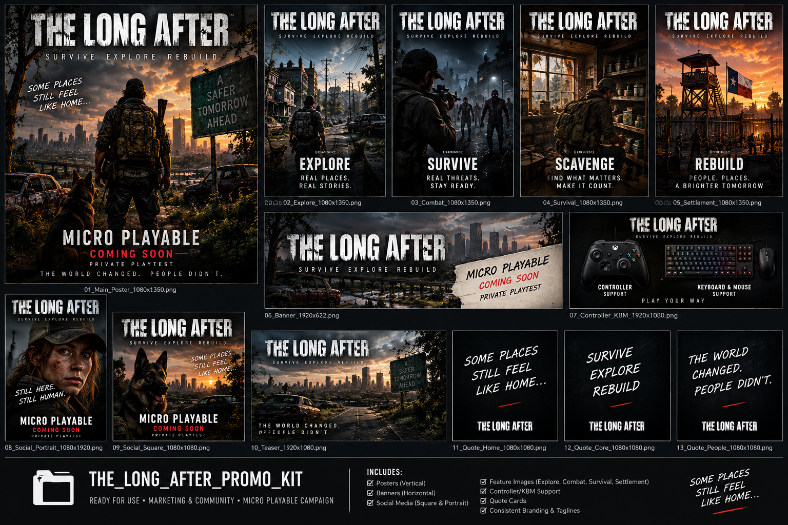
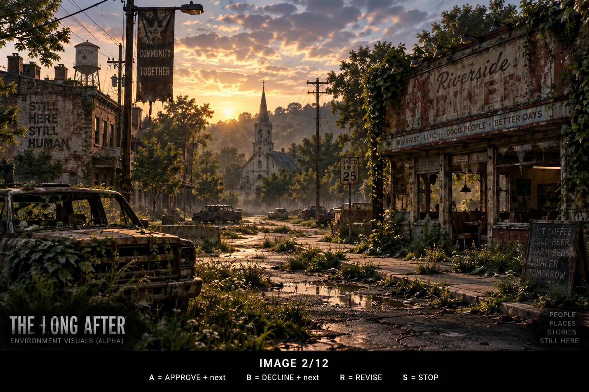
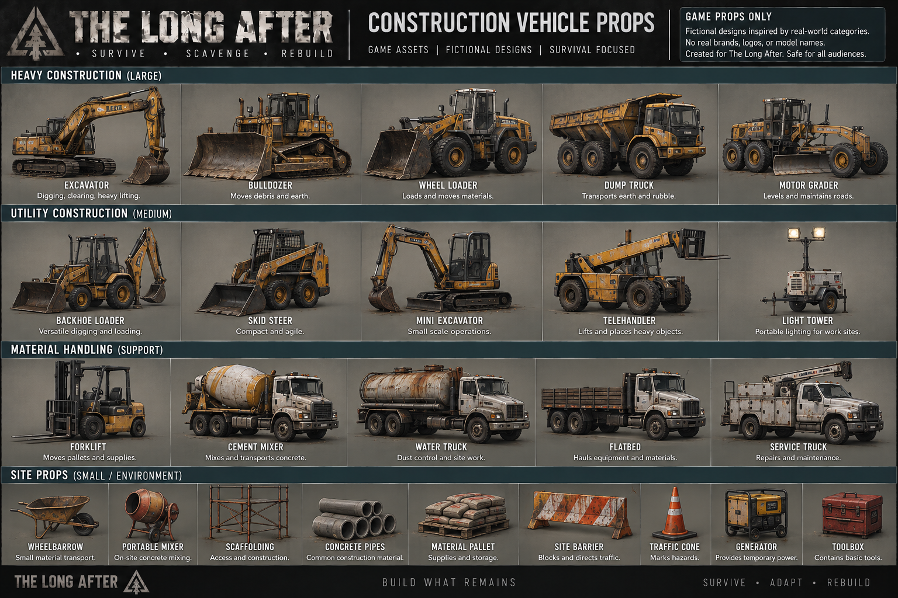

Read the world
Move through urban, suburban, highway, industrial, waterway and Hill Country-inspired spaces built for discovery and traversal.
Survive a fractured, Central Texas-inspired world where supplies matter, travel has consequences, and the spaces between civilization and wilderness are never truly safe.
THE LONG AFTER is being built around readable survival systems, exploration, combat, looting, traversal and a world that moves from pockets of civilization into increasingly dangerous frontier and wilderness.
Move through urban, suburban, highway, industrial, waterway and Hill Country-inspired spaces built for discovery and traversal.
Health, stamina, supplies, inventory weight and equipment shape moment-to-moment decisions without turning the experience into a spreadsheet.
Combat, stealth, scavenging and movement are designed to work together as the situation changes.
The region is original fiction inspired by Central Texas rather than a one-to-one recreation. Its broad gradient moves from Civilization to Frontier to Wilderness and Dead Zones, with original districts, settlements, infrastructure and landmarks.
The player-facing guide will grow alongside verified game systems. It is designed as a clear companion to the in-game manual, not a spoiler-filled encyclopedia.
Core traversal and environmental interaction.
Carry what you need and understand the cost of carrying too much.
Read threats, choose an approach and understand the basic combat language.
Vehicle systems and travel guidance will appear here when publicly approved.
Approved project imagery is presented as development material. Final gameplay captures and trailers will replace promotional development imagery as production reaches those milestones.



The project is actively in development. Public material is kept separate from internal production and is only surfaced here after it is appropriate to show.
View public project repository